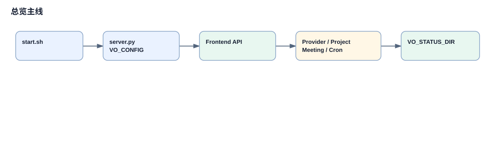

30 分钟快速总览
My Virtual Office 二开版是本地优先的 AI Agent 可视化工作台。当前核心不是像素画布本身，而是围绕项目看板组织的 Agent 执行闭环：用户启动项目任务，后端创建 attempt，调用不同 provider，保存证据，再进入评审、验收、返工、会议阻塞或连续下一任务。
项目定位和技术栈
README 把项目定义为“本地 AI 团队控制台”：像素办公室负责展示 Agent 状态，多 provider adapter 负责把 OpenClaw、Hermes、Codex、Claude Code 归一化成办公室 Agent，项目看板负责把任务执行、评审、验收和产物沉淀下来。
技术栈很直接：`start.sh` 启动本地 Python 服务，`app/server.py` 作为标准库 HTTP 单体服务和 WebSocket proxy，`app/index.html` 直接加载 `game.js`、`chat.js`、`projects.js` 等静态脚本，项目数据主要写入 `VO_STATUS_DIR` 下的 Markdown/JSON/JSONL 文件。
Docker Compose 仍在仓库中，但 README 明确当前二开版推荐本地启动；`agent-browser` 容器是浏览器代理边界，不能把它误解成主应用的推荐部署路径。

这张图是当前分析的概念总览图，节点来自 README、start.sh、app/server.py、app/projects.js 和 provider adapter 文件。
最重要的 Happy Path
本地启动
`start.sh:start_local` 设置 `VO_PORT`、`VO_WS_PORT`、`VO_STATUS_DIR`、gateway/browser 配置后运行 `app/server.py`。
服务进入单体后端
`server.py` 启动 API usage collector、WebSocket proxy、workflow auto-resume，再由 `ThreadingHTTPServer` 分发请求。
前端启动项目执行
`app/projects.js` 向 `/api/projects/{projectId}/project-execution/start` 或任务级路径发 POST。
后端创建 attempt
`_handle_project_execution_start` 校验 workspace、executor/reviewer、dirty worktree，写入 `attempts` 和 `activeAttemptId`。
调用 provider 并保存证据
`_project_execution_run_attempt` 构造 prompt，通过 `_project_execution_call_executor` 调用 Codex/Hermes/Claude/OpenClaw，并把结果、文件变化、测试和 providerRef 写入 evidence。
进入评审、验收或阻塞
成功结果会按 `skipReview`、`autoReviewAfterExecution`、`requiresUserAcceptance`、meeting blocker 等条件分流到 review、done、awaiting_user_acceptance、blocked 或下一任务。
本次筛选的 5 条重点链路
| 优先级 | 链路 | 为什么深挖 | 页面 |
|---|---|---|---|
| 1 | 前端项目执行启动 | 把用户动作和后端状态机接起来，包含 dirty workspace 与 reviewer 缺失确认。 | frontend-project-execution-start.html |
| 1 | Project Execution attempt 运行 | 主业务闭环的核心，承担 prompt、provider、evidence、状态分流。 | project-execution-attempt-run.html |
| 1 | Provider-neutral Agent 调用 | 解释不同 Agent 平台如何走同一个执行合同。 | provider-neutral-agent-call.html |
| 2 | 评审、返工、验收 | 决定执行结果能否进入 done，且有人工验收门禁。 | review-rework-acceptance.html |
| 3 | AI 会议请求阻塞与恢复 | 这是项目执行中最重要的协作分支，不是普通会议 UI。 | meeting-request-blocker.html |
真实历史演进的结论
Git 历史支持一个清晰顺序：`2b7b6ae` 初始 OpenClaw Virtual Office 单体应用；`be6ff12` 在 v0.6.0 引入 Projects & Tasks 主流程；`ee8f3cc` 把项目存储迁到 `MarkdownProjectStore`；`40e917a` 引入 Hermes provider adapter；`d3388db` 与 `0041762` 引入 Codex harness 和 bridge；`baa2c80` 修复 project execution 状态转移；`f73f92e` 引入 meeting blocker。
历史页会严格区分两件事：commit/tag/diff/blame 能验证“何时引入”和“涉及哪些文件”；复杂设计的“为什么”只有在 commit message、代码注释或需求归档支持时才写成确定结论。`app/provider_execution.py`、`app/provider_app_server.py`、`app/providers/claude_code.py` 当前未被 Git 跟踪，因此只能作为当前现场代码分析，不能作为可验证历史演进。
质量闸门与风险声明
已使用 Subagent 协作：结构分析、链路发现、Git 历史溯源、链路深挖四类输出均已纳入本教程。页面生成前已筛选 5 条高价值链路，并建立“结论 -> 证据 -> 页面”的索引。
本次没有启动完整 Virtual Office 服务，也没有运行端到端 UI 测试；链路验证来自源码、README、Git log/show/blame 和现有测试文件名。OpenClaw/Hermes/Codex 外部运行时行为只按仓库调用代码说明，不声称已验证真实外部服务。
已知降级：未提交 provider runtime 相关文件仅写为“当前现场代码”；大型批量提交 `53a6c1b` 只证明功能批量合并和文件增长，不把每个函数动机写成确定历史。